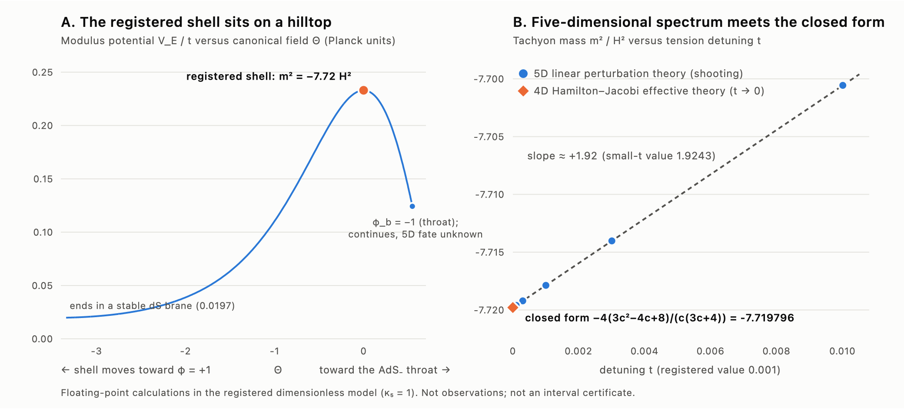
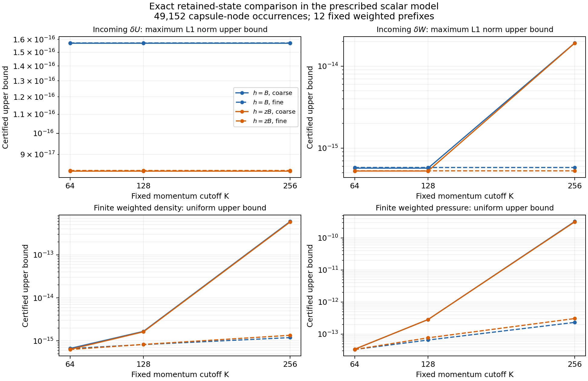
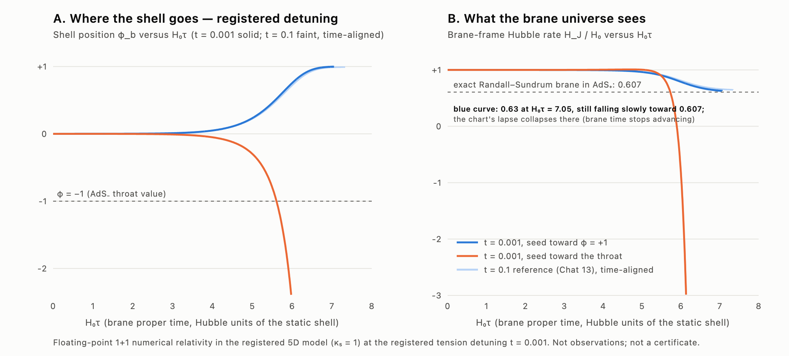

Ricardo Maldonado · programa de investigación independiente · 2025–2026
¿Pudo una “explosión” en una dimensión superior encender nuestro Big Bang?
HDBLAST pregunta si un evento gravitacional violento en una quinta dimensión pudo haber transferido energía a nuestro universo de cuatro dimensiones e iniciado el Big Bang caliente. Las ecuaciones, el código, los resultados, los fracasos y las correcciones son todos públicos.
La idea
Nuestro universo podría comportarse como una delgada membrana (una “brana”) dentro de un espacio más grande de cinco dimensiones, lleno de gravedad y de un campo escalar. Si la membrana está en un equilibrio inestable, como una pelota en la cima de una colina, puede rodar hacia abajo y liberar energía. HDBLAST pregunta si un evento así pudo haber producido el estado caliente y denso donde comienza la historia estándar del Big Bang. La ampliaría, no la reemplazaría.

Coeficiente completo de segundo orden durante el contacto con la superficie de unión (14 de octubre de 2026): Para el paquete cuadrupolar con matrices conmutativas y paridad par entre las dos copias especificado, la reconstrucción escalar de primer orden sin cambios no satisface la ecuación angular cuadrática de grado cuatro. La continuación conserva todos los campos métricos y escalares, con sus fuentes cuadráticas completas en el volumen y sus condiciones físicas de frontera en la superficie de unión.
Bajo las hipótesis declaradas sobre el fondo, la localización y los datos iniciales, una elección armónica relativa de coordenadas que conserva la frontera y una construcción convergente por características proporcionan un coeficiente completo y suave del desarrollo de Taylor de segundo orden durante el primer contacto, en un entorno controlado del lado positivo del cono. Incluye los grados escalares cero, dos y cuatro y el grado tensorial dos. La construcción satisface todas las ecuaciones de Einstein y del campo escalar, la igualdad de los campos inducidos y las leyes de Israel y del campo escalar en la superficie hasta segundo orden, con propagación de las restricciones con fuentes.
Es una construcción condicional del coeficiente. Siguen sin establecerse una familia no lineal exacta durante el contacto, estimaciones uniformes para todos los modos angulares, la estabilidad no lineal y un origen del Big Bang en dimensiones superiores. La revisión interna asistida por IA no es revisión externa por pares, y no se establece novedad externa. Este resultado se publica solo en GitHub, sin nueva versión de Zenodo ni envío a APS. Las entradas anteriores, incluidas las anteriores del 14 de octubre, conservan su alcance original.
Construcción, hipótesis y verificaciones reproducibles · Demostración del coeficiente completo.
Fuente tensorial cuadrática y un sector tensorial durante el contacto con la superficie de unión (14 de octubre de 2026): Para el cuadrupolo especificado Y = n₁² − n₂², con la elección longitudinal fija de primer orden, la fuente cuadrática completa de gravedad y campo escalar tiene una componente angular transversa y sin traza no nula donde alguna de las dos amplitudes escalares es no nula: su coeficiente es 16u² + 8v²/3. Las dos contribuciones no pueden cancelarse allí. Un paquete con solo velocidad inicial puede tener fuente nula en su sección inicial y desarrollarla después.
Para datos maestros de primer orden de paridad par, el sector tensorial forzado de segundo orden correspondiente tiene datos de Neumann homogéneos en la superficie y una evolución condicional a través del primer contacto en un entorno controlado. Siguen abiertos el problema completo de frontera de segundo orden con acoplamiento escalar y tensorial, y una solución no lineal durante el contacto.
Derivación, hipótesis y verificaciones reproducibles. Los resultados usan el fondo, la elección de coordenadas de primer orden y la paridad especificados. No establecen un origen del Big Bang ni novedad externa; la revisión interna de la demostración no es revisión externa por pares. Es un resultado publicado solo en GitHub, sin nueva versión de Zenodo ni envío a APS. Las entradas anteriores conservan su alcance fechado.
Datos iniciales exactos y localizados, y evolución breve antes del contacto (14 de octubre de 2026): Bajo las hipótesis declaradas del fondo y las estimaciones no lineales ponderadas, el sector de cuadrupolos invariantes por reflexión admite una familia de datos iniciales no lineales exactos con una regularidad de Sobolev alta y finita elegida. Una evolución de Cauchy suficientemente breve, antes del contacto, mantiene los campos iguales al fondo en un entorno de la superficie de unión, de modo que allí sus condiciones de unión permanecen sin cambios.
El problema no lineal de frontera durante el contacto con la superficie sigue abierto. El teorema tiene regularidad alta y finita; no establece suavidad espacial a todos los órdenes, una conclusión sobre el Big Bang ni novedad externa. La demostración recibió revisión interna asistida por IA, que no es revisión externa por pares. Demostración, hipótesis y límites. Es un resultado publicado solo en GitHub, sin nueva versión de Zenodo ni envío a APS. Las entradas anteriores conservan su alcance fechado.
Continuación formal mediante simetría de reflexión (14 de octubre de 2026): Para los cuadrupolos conmutativos de la familia restringida del resultado localizado, la diagonalización simultánea hace que los datos de primer orden sean invariantes bajo reflexiones de coordenadas. Estas reflexiones anulan las diez condiciones locales de compatibilidad por simetría en cada orden finito de las restricciones. Bajo las hipótesis declaradas de localización, la resolución recursiva de las restricciones y el promedio sobre el grupo de reflexiones construyen datos iniciales formales a todos los órdenes con soporte localizado. Es una serie formal: no se establecen su convergencia, una solución no lineal exacta ni la evolución completa a través del contacto con la superficie de unión. Derivación, hipótesis y límites.
Datos iniciales localizados de segundo orden (14 de octubre de 2026): En la sección regular de Einstein–escalar simétrica en el tiempo, las diez pruebas de simetría son necesarias y suficientes para obtener correcciones de datos iniciales de segundo orden con soporte compacto, para paquetes suaves de paridad de reflexión fija en un anillo alejado de la superficie de unión y del vértice del cono, bajo las hipótesis declaradas del fondo y de localización. La nota presenta una corrección explícita para A = B = diag(1,−1,0,0). La corrección se anula cerca de la superficie, por lo que las condiciones iniciales de unión de segundo orden se cumplen con desplazamiento e inclinación nulos de la superficie.
Una identidad monopolar ponderada por el radio areal fija un momento de la parte esférica de la métrica para paquetes de primer orden en la elección de coordenadas de reconstrucción. Su signo negativo para paquetes de velocidad corresponde a esa elección: el momento cambia bajo transformaciones de coordenadas de primer orden y todavía no es una magnitud física de masa o energía.
Siguen abiertas la evolución completa de segundo orden a través del contacto con la superficie, las fuentes cuadráticas de unión, la convergencia de la serie formal de órdenes superiores y la existencia no lineal. Este resultado no establece un origen del Big Bang en dimensiones superiores. Nota técnica · Cálculos y material de apoyo · Resultados y límites. Es un resultado publicado solo en GitHub; Zenodo 23335485 sigue siendo la última edición espectral archivada. No incluye una nueva versión de Zenodo ni un envío a APS.
Obstrucción de simetría en la superficie de unión (13 de octubre de 2026): En el fondo regular fijado de Einstein–escalar con dos regiones interiores, la identidad no lineal completa de Noether conserva los dos términos gravitatorios de frontera, las inmersiones móviles y la única acción común de la superficie. Un cálculo independiente de las restricciones ADM verifica una obstrucción no nula de segundo orden para un cuadrupolo compacto explícito en rotación: no puede ser la tangente a una familia clásica exacta C² en el parámetro que satisfaga todas las condiciones de unión. El ejemplo puede elegirse entre soluciones lineales suaves, no puramente de coordenadas, que alcanzan la superficie.
Dentro de los datos de grado dos con un perfil radial fijo y una paridad de reflexión fija, las diez pruebas necesarias de simetría de Lorentz se anulan exactamente cuando conmutan las matrices de desplazamiento y velocidad, [A,B]=0. Superar estas pruebas no demuestra que el sistema de segundo orden tenga solución ni que exista una familia no lineal. El resultado no establece crecimiento no lineal, estabilidad, un origen del Big Bang ni preparación para APS. La reproducción portátil normal y optimizada verifica en cada modalidad 81 comprobaciones algebraicas positivas y 21 controles de fórmulas incorrectas, contabilizados por separado.
Nota técnica · Demostraciones y reproducción portátil · Resultados y límites. Es un resultado de investigación publicado solo en GitHub. Zenodo 23335485 sigue siendo la última edición espectral archivada; esta continuación no incluye una nueva edición de Zenodo ni un envío a APS.
Evolución condicionada durante y después del contacto con la superficie (13 de octubre de 2026): Sobre el fondo regular fijado de Einstein–escalar, una construcción explícita mediante características produce una familia suave a partir de datos radiales de soporte compacto en un anillo suficientemente delgado, con un conjunto finito fijo de armónicos angulares de grado al menos dos. La familia incluye pares de soluciones que activan la superficie después de la primera llegada dentro de un intervalo finito controlado. Ambas paridades de reflexión satisfacen las condiciones completas de continuidad de los campos inducidos y las condiciones de unión de Israel y del escalar, sin dividir por armónicos. Las soluciones no nulas no son transformaciones puras de coordenadas. Un par explícito de estados con la misma paridad tiene un emparejamiento simpléctico físico total no nulo, conservado después del contacto al incluir el término del corte de la superficie móvil en la paridad impar. El emparejamiento es débilmente no degenerado en esta imagen de datos suaves del anillo delgado.
Este resultado linealizado condicionado corresponde a una nueva familia apoyada cerca de la superficie. No prolonga hasta el contacto el par anterior con flujo en el cono ni establece flujo local no nulo en la superficie, energía física, completitud angular sin restricciones, estabilidad no lineal, evidencia cosmológica, originalidad externa o preparación para APS. La reproducción portátil normal y optimizada verifica en cada modalidad 84 identidades exactas positivas y 14 controles de fórmulas incorrectas, contabilizados por separado.
Nota técnica · Demostraciones y reproducción portátil · Resultados y límites. Es un resultado de investigación publicado solo en GitHub. Zenodo 23335485 sigue siendo la última edición espectral archivada; esta continuación no incluye una nueva edición de Zenodo ni un envío a APS.
Resultado anterior: evolución local acoplada a través del cono (13 de octubre de 2026): Una ecuación de ondas regular permite reconstruir soluciones suaves de todas las ecuaciones linealizadas de Einstein–escalar a través del cono. Datos iniciales de soporte compacto producen dos soluciones que no son transformaciones puras de coordenadas, con flujo simpléctico local no nulo. Ambas paridades de reflexión satisfacen las condiciones de unión antes de que las ondas alcancen la superficie. La forma simpléctica física de Cauchy es no degenerada en la imagen de datos suaves del campo maestro cuyo soporte está contenido en una bola espacial suficientemente pequeña.
Sigue abierta la evolución hasta el contacto de aquel par original con flujo en el cono; la nueva familia cercana a la superficie descrita arriba tiene una prueba separada. También siguen abiertos el espacio físico completo y la estabilidad no lineal. El flujo simpléctico es una forma bilineal antisimétrica, no un cálculo de energía positiva ni de recalentamiento. No se establece un origen del Big Bang en dimensiones superiores.
Nota técnica · Demostraciones y código reproducible · Resultados y límites. Esta continuación se publica en GitHub. Zenodo 23335485 sigue siendo la edición espectral archivada anterior; no se ha realizado un nuevo envío a APS.
Corriente y dominio físico (13 de octubre de 2026): La acción de Einstein–escalar proporciona ahora una corriente simpléctica explícita, incluidos valores espectrales distintos y el balance de la superficie que une las dos regiones. Bajo las hipótesis asintóticas indicadas para soluciones efectivas, su límite en el cono nulo es un flujo simpléctico escalar. Ejemplos exactos con un campo de prueba en espacio plano muestran que la condición radial a tiempo fijo no implica flujo característico nulo, y que los espacios completados con la energía radial e inercial pueden diferir. El espacio de estados físicos del modelo gravitacional fijado sigue sin determinarse.
Nota técnica · Derivaciones y código · Resultados y límites. Esta continuación se publica en GitHub; Zenodo 23335485 sigue siendo la edición espectral archivada anterior. No se ha realizado un nuevo envío a APS ni se establece un origen del Big Bang en dimensiones superiores.
Resultado espectral condicionado (13 de octubre de 2026): Para cada valor fijo 0 < delta ≤ 0,002, el espectro escalar completo de ambas paridades de reflexión tiene una separación estrictamente positiva respecto de cero en la realización autoadjunta especificada, de energía finita y cono regular. La prueba proporciona una cota positiva como función del fondo; no asigna un valor numérico ni una cota uniforme cuando delta tiende a cero. El cálculo de la acción, incluidos los términos de frontera de la superficie móvil, verifica los coeficientes cinéticos locales de los modos escalares genéricos pares e impares. Los armónicos excepcionales se tratan por separado. El sector tensorial tiene un único perfil radial sin masa, de paridad par, y toda masa tensorial no nula satisface m_T ≥ 3H_b/2.
El resultado corresponde a la rama regular cercana a phi = +1 de la misma acción fijada. La configuración original situada en la cima del potencial sigue siendo una solución distinta e inestable; no se demuestra una evolución entre ambas. La cobertura global de los estados físicos, los difeomorfismos admisibles y el flujo simpléctico en el cono conservan las condiciones declaradas. No se establece estabilidad no lineal, un mecanismo de recalentamiento ni un origen del Big Bang en dimensiones superiores. La reproducción portátil, en Python normal y optimizado, verifica en cada modalidad 103 comprobaciones exactas y 30 controles de fórmulas incorrectas, contabilizados por separado. Prueba, hipótesis y reproducción portátil · Resultados y cota como función del fondo.
Publicación verificada (13 de octubre de 2026): Zenodo 23335485, versión 2026.10.13-regular-shell-spectra, contiene 35 archivos / 454,964,066 bytes. La edición conserva los 33 archivos de 23294979 y añade la nueva cápsula científica y el resumen. La lectura pública completa verificó los nombres, tamaños y sumas MD5/SHA256 de todos los archivos. Prueba de publicación e inventario completo.
Resultado sobre la condición escalar de frontera (11 de octubre de 2026): una identidad exacta de respuesta y cotas de error más precisas certifican la rama regular local del modelo registrado para todo 0 < delta ≤ 0,002, ampliando la garantía anterior de 1,09155 × 10−7. La demostración obtiene monotonía estricta del residuo de empalme, RT ≤ −H² < 0, bajo sus hipótesis declaradas. Las constantes uniformes del resto escalar y del resto de curvatura satisfacen Keta < 3,196 y KH < 0,254. La curvatura es menor que en la teoría de frontera completa separada con desajuste independiente del campo escalar: H² − Hconstante² < −0,000423 delta² en todo ese intervalo. Son resultados matemáticos condicionales sobre la rama local especificada; la estabilidad dinámica y un origen del Big Bang en dimensiones superiores siguen sin establecerse. Demostración, certificados exactos y cálculos reproducibles · Revisión bibliográfica acotada de fuentes primarias · Edición verificada de Zenodo 23294979. Se conserva el resultado del 8 de octubre.
Publicación verificada (11 de octubre de 2026): Zenodo 23294979, versión 2026.10.11-scalar-response-monotonicity, contiene 33 archivos / 454.129.865 bytes en la familia DOI 17088132. Conserva los 31 archivos de la edición 23244754 y añade el paquete científico de respuesta escalar y su resumen. Se verificaron los metadatos guardados y el nombre, tamaño, MD5 y SHA256 de cada archivo antes de publicar y mediante lectura pública anónima completa después de publicar. Prueba de publicación e inventario completo.
Investigación completada (8 de octubre de 2026 UTC): 98.304 comparaciones de estados finales guardados. Las ejecuciones normal y optimizada comparan cada nodo retenido en eta = -4 y -3,5 con el flujo prescrito exacto desde su estado inicial guardado exacto en eta = -4,5. Los nueve archivos científicos coinciden byte por byte, con comprobación independiente. Las cotas máximas de discrepancia L1 cartesiana son U < 2,520 × 10−16 y W < 3,158 × 10−15. El umbral 1e-18 limita los radios de las envolventes del objetivo, no el error del estado guardado. Resultados exactos y cotas de sumas finitas.
Modelos analíticos condicionales separados: el modelo estable de respuesta y ruido en un semiespacio plano de cinco dimensiones y su extensión de paquetes incidentes superaron la revisión analítica independiente. Una réplica exacta con un continuo en cuatro dimensiones impide identificar la dimensión a partir de estos observables. En el modelo estático lineal, los paquetes suaves de continuo con soporte compacto alejado del umbral y proyecciones nulas de posición y velocidad sobre modos ligados producen almacenamiento transitorio en la brana y reflexión final, sin captura permanente ni termalización. Supuestos y revisiones.
Los extremos guardados no recuperan la trayectoria densa no guardada. El certificado continuo completo de presión, contactos, tiempo, momento y ultravioleta sigue UNRESOLVED, la calibración métrica FAIL, la causa del Big Bang en dimensiones superiores NOT_ESTABLISHED y la novedad externa NOT_ASSESSED. La reproducción independiente normal y optimizada y los controles de CI numéricos y del modelo pasaron. La CI de los documentos finales y el despliegue del sitio se documentan por separado en el registro final de entrega. La edición conservada del 8 de octubre es 23244754 (31 archivos / 453.646.943 bytes). Evidencia de reproducción y CI. Estado actual de investigación y publicación.
Resultados anteriores (hasta el 7 oct. de 2026)
| Resultado | Estado |
|---|---|
| Se fija de antemano un modelo específico de Einstein–escalar en 5D: W(φ)=1−φ+φ³/3, tensión de la membrana σ=2W+δ(1+cφ), δ=0.001 | Definición |
| Dentro del modelo, la solución de membrana registrada existe (prueba asistida por computadora, localmente única; es una afirmación sobre las ecuaciones, no sobre la naturaleza) | Certificado (condicional) |
| Un modo escalar inestable, m² ≈ −7.7179 H², crecimiento e1.657 Hτ (numéricamente el único). Ningún modo inestable en los sectores tensorial, vectorial ni de armónicos especiales (estabilidad de modos, no estabilidad lineal completa). | Certificado (modo) / Numérico (unicidad) / Exacto (otros sectores) |
| Una teoría 4D de forma cerrada coincide con el espectro 5D hasta ~10⁻⁶ y predijo el punto de retorno antes de que la simulación 5D lo confirmara | Exacto + Numérico |
| Evolución no lineal completa en 5D: dos destinos, relajación hacia una brana de de Sitter vacía (las simulaciones aún no alcanzan el estado final) o inversión y colapso | Numérico |
| El movimiento homogéneo y clásico de la membrana, sin materia añadida, no produce un universo caliente lleno de radiación | Negativo |
| Solución estática tardía corregida (numérica); una extensión propuesta con materia y una ley exacta de intercambio de energía | Numérico / Exacto (propuesta) |
| Afirmación de julio de 2026 sobre radiación gravitacional, retirada tras una auditoría | Retirada |
| Firma de “rodilla” en la sincronización de púlsares: evaluada de forma preliminar con datos públicos, no derivada del modelo 5D; la prueba estricta registrada falló | Preliminar / Negativo |
| Nuevo (27 sept.): el estado final corregido es linealmente estable en los sectores probados; dos métodos independientes coinciden | Numérico (auditado) |
| Nuevo (27 sept.): series exactas del estado final hasta octavo orden, confirmadas con 30–40 dígitos | Exacto |
| Nuevo (27 sept.): la producción de partículas y otras seis vías de calentamiento no dan una era de radiación en el modelo registrado; el obstáculo es la energía del vacío sobrante | Negativo (condicional) |
| Nuevo (27 sept.): un término adicional en la tensión cancela el vacío sobrante, pero la “radiación oscura” sigue por encima de los límites observacionales por ahora | No concluyente |
| Nuevo (28 sept.): con la tensión ajustada para cancelar el vacío sobrante (un cambio de modelo) y una fórmula provisional de transferencia de energía, aparece una fase dominada por radiación; la “radiación oscura” es el 7,3% de la radiación con una tasa de transferencia, dentro del límite conservador | Numérico (condicional, ajuste fino) |
| Nuevo (30 sept.): con una transferencia más fuerte la “radiación oscura” baja al 2,1%, dentro del límite estricto actual (3%). Pero la fase dura menos de medio e-fold de expansión antes de que el vacío negativo sobrante haga recolapsar la capa, exige ajustar la tensión a 1 parte en 10⁴ y aún usa la fórmula provisional | Numérico (interno al modelo, condicional) |
| Nuevo (30 sept.): al sustituir la fórmula provisional por la producción de partículas derivada de la extensión de materia, con masas por debajo de la escala de gravedad en 5D, la “radiación oscura” sigue siendo mucho mayor que la radiación | No concluyente, tendiendo a negativo |
| Nuevo (30 sept.): la misma prueba con el valor registrado δ = 0,001 no está terminada (fallo numérico diagnosticado, aún sin corregir) | No concluyente |
| Nuevo (1 oct.): un límite de energía incluye tanto la radiación del decaimiento como las partículas que aún no han decaído. En dos cruces archivados que pasan la prueba local, el presupuesto sigue muy por debajo del objetivo de radiación en el instante evaluado. | Límite analítico / Cálculo exploratorio, condicional |
| Nuevo (1 oct.): una auditoría ejecutada de las trayectorias guardadas encuentra un intervalo anterior de dominio de radiación de unos 0,314 e-fold en la simulación más fina de Y = 2, según un nuevo diagnóstico que evita la cancelación por vacío negativo. La meseta posterior no cumple ese diagnóstico. Se conserva el veredicto registrado anterior. | Diagnóstico retrospectivo con datos guardados |
| Nuevo (1 oct.): el integrador de modos de partículas pasa 90 controles con pulsos de solución exacta y 30 controles finos de normalización. Es una base verificada para la siguiente prueba física. | Control numérico registrado |
| Nuevo (1 oct., modos cuánticos): los modos sobre la membrana ajustada y sin fuente archivada dan un conteo integrado 0,0503% menor que la estimación corregida, para el estado y la banda de momentos declarados. La coherencia cuántica añade un 10,96% a la corriente escalar estimada solo con partículas e invierte el signo de la presión relativa. Pasan diez variantes registradas y controles independientes de modos. | Numérico: geometría prescrita, tensor relativo |
| Nuevo (1 oct., ajuste cuántico): el lazo de materia propuesto exige términos adicionales de potencial y curvatura intrínseca en la acción de la membrana. La fuente absoluta y los coeficientes finitos de ajuste para la membrana curva siguen sin determinarse. | Requisito analítico de teoría efectiva |
| Nuevo (1 oct. Pacífico / 2 oct. UTC, fuente en geometría curva): pasan ocho controles de reconstrucción tras una reparación numérica documentada. La interpolación archivada y el estado inicial presentan obstáculos ultravioletas distintos; los ajustes más suaves muestran sensibilidad a derivadas en el límite inicial. Pasan los controles algebraicos exactos y 18 evoluciones independientes del modelo de prueba. | Auditoría: fuente absoluta en geometría curva pendiente |
| Nuevo (2 oct.): una fuente cuántica sobre espacio plano atraviesa un cruce de masa nula y pasa ocho variantes registradas, controles exactos de dispersión, balance energético y traza de presión. El potencial y la curvatura se ajustan en una referencia declarada. | Prueba numérica: geometría prescrita y convención fija |
| Nuevo (2 oct.): omitir el ajuste de curvatura hace que la presión dependa fuertemente del regulador aunque se conserve la energía. La formulación directa muestra convergencia con el corte de momentos y cumple una identidad exacta de traza a corte finito. Los resultados con regulador finito aún cambian varios por ciento. | Controles analíticos y numéricos |
| Nuevo (2 oct., fuentes masivas en de Sitter): Cuatro casos de vacío cuántico con una referencia común pasan 57 controles, un cálculo separado de tiempo propio y una comprobación exacta de presión directa en un punto curvo. Diecinueve integraciones clásicas resuelven una respuesta estática diminuta y corrigen su signo, antes limitado por redondeo. | Álgebra exacta / Numérico, verificación interna |
| Nuevo (2 oct., cierre cuántico estático): Ambas fuentes cuánticas entran en un cálculo regular del volumen y la brana: 48 soluciones pasan 1.584 controles corregidos y comparaciones independientes. La retroacción no lineal se resuelve solamente donde falla el criterio declarado de jerarquía gravitatoria. | Modelo estático numérico, límites físicos pendientes |
| Nuevo (2 oct., respuesta causal): Los modos forzados independientes pasan 36 comparaciones a corte finito y 17 controles. Ambos pulsos conservan una respuesta negativa de la varianza cuando desaparece la fuente. | Geometría fija; tensor, estabilidad y calentamiento pendientes |
| Nuevo (2 oct., tensor ajustado): La densidad y la presión calculadas independientemente pasan 180 comparaciones principales, controles de traza y contactos a corte finito y un balance energético separado. Se conservan las cotas de cola y los modos originales. | Respuesta lineal sobre geometría fija; calentamiento pendiente |
| Nuevo (3 oct., requisito de integración): Dos métodos independientes certifican integrales de momentos y primitivas de la fuente en nueve valores registrados, con cotas analíticas uniformes del modelo y un radio conservador del intervalo completo que contiene ambos resultados menor que 1,373 × 10⁻²⁸. | Certificado condicional; conservación y tensor completos pendientes |
| Nuevo (5 oct.): Los núcleos exactos de tensión y error de banda finita acotan la contribución de truncamiento analítico de la fuente durante todo el intervalo. Un cambio normalizado del estado entre las sondas muestra que el estado inicial necesita una cota independiente. | Matemáticas exactas condicionales; certificado numérico completo pendiente |
| Nuevo (7 oct.): Dos métodos independientes acotan la respuesta del vacío prescrito en los nueve momentos registrados; los 36 recintos complejos se intersectan y cumplen el umbral de 10⁻²⁰. | Certificado del objetivo en los puntos registrados; certificado completo pendiente |
Resultado anterior (7 de octubre de 2026): error del estado inicial acotado en todos los nodos conservados. Cuatro archivos autenticados contienen 49.152 apariciones de nodos. Sus valores binarios originales se decodifican exactamente y se comparan con un objetivo prescrito certificado en cada nodo. Para W = w/epsilon, la cota superior del error L1 cartesiano es menor que 1,914 × 10⁻¹⁴ en la malla gruesa y 5,776 × 10⁻¹⁶ en la fina; para U normalizada es menor que 1,571 × 10⁻¹⁶. Los máximos de W en la malla gruesa aparecen cerca del corte superior de momento. Esta diferencia medida no demuestra convergencia al continuo ni explica su causa. Resultado exacto, reproducción y límites (inglés).
El error original del estado inicial queda ENCLOSED en los nodos conservados. La transferencia exacta del error en tiempo continuo acota densidad, presión, trabajo e integral temporal de presión para doce sumas con pesos finitos fijos, bajo la condición de una fuente física posterior y contactos completos idénticos. No acota la trayectoria numérica posterior, la integral continua de momento, los defectos de contacto ni la cola ultravioleta. Ocho archivos científicos se reproducen byte por byte en Python normal y optimizado; una auditoría independiente revisa todos los resúmenes serializados. El certificado completo sigue UNRESOLVED, la calibración métrica FAIL, el origen del Big Bang NOT_ESTABLISHED y la novedad externa NOT_ASSESSED.

La revisión bibliográfica acotada (inglés) realiza 22 búsquedas y lee pasajes primarios seleccionados de ocho artículos. El argumento condicional de identificabilidad dimensional (inglés) muestra por qué entradas efectivas completas iguales pueden producir las mismas leyes observables. El siguiente modelo físico necesita una predicción derivada de la acción que se distinga de rivales especificados de cuatro dimensiones.
Resultado anterior (7 de octubre de 2026): respuesta del vacío prescrito con cotas de error. Dos métodos independientes calculan la respuesta de dos fuentes suaves, partiendo de la condición de vacío de Bunch–Davies especificada antes de que actúen las fuentes. Cubren nueve valores de momento y dos cantidades de respuesta normalizadas: 18 casos y 36 recintos complejos. Los 36 recintos de ambos métodos se intersectan. Sus radios de error completos máximos son menores que 1,555 × 10⁻²¹ y 3,138 × 10⁻²³, dentro del umbral fijo de 10⁻²⁰. El valor de momento cero es la continuación analítica de la respuesta. Resultado, reproducción y límites (inglés).
Un certificado separado acota solo el error de representación de la fuente previa y de sus coeficientes. Con la fuente posterior y todos los contactos idénticos, sus contribuciones a la presión y densidad escaladas son menores que 1,625 × 10⁻¹⁸ y 4,094 × 10⁻²¹ durante todo el intervalo de tiempo [−9/2, −7/2], para los cortes de momento 64, 128 y 256. Estas cotas continuas no incluyen la aritmética de fase ni del integrador para todos los momentos. En aquella etapa, los errores de los modos binarios conservados eran NOT_ENCLOSED; la comparación posterior ya los acota en cada nodo inicial, el certificado completo de doce casos sigue UNRESOLVED y la calibración métrica sigue FAIL. No se ha establecido un origen del Big Bang en dimensiones superiores.
Resultado anterior (7 de octubre de 2026, hora del Pacífico): transferencia condicional del estado inicial. Las fórmulas exactas de densidad y presión conservan la fase de los errores homogéneos del estado cuando la fuente y todos los contactos son idénticos. La normalización de primer orden no acota la amplitud del estado. Con la desviación de normalización controlada de forma independiente, una cota demostrada de esa amplitud permite cotas condicionales del error de tensión-energía en banda finita. Los operadores directos también proporcionan una primitiva temporal exacta de la presión con signo. No se proporciona una cota del estado real, una trayectoria física ni el certificado completo de doce casos; la cola ultravioleta queda fuera del resultado. La calibración métrica mantiene FAIL y un origen del Big Bang en dimensiones superiores sigue NOT_ESTABLISHED. Resultado, prueba y límites (inglés).
Resultado anterior (5 de octubre de 2026 UTC): matemáticas exactas de tensión y error de banda finita. A K=256, la contribución del truncamiento analítico de Taylor de la fuente es menor que 5,5 × 10⁻²⁸ para la densidad escalada y 2,2 × 10⁻²⁵ para la presión escalada durante todo el intervalo declarado. Son cotas condicionales de un solo componente del error. Siguen pendientes cotas independientes del estado inicial, la aritmética, los contactos y la cuadratura; un estado suave normalizado puede pasar las nueve sondas y la conservación mientras cambia la tensión integrada. Pasan tres verificaciones exactas y seis ejecuciones desde un archivo extraído de nuevo. El certificado completo de doce casos sigue sin resolver y la calibración métrica mantiene FAIL. Resultado, prueba y límites (inglés) · Reproducción exacta autónoma (inglés).
Resultado anterior (3 de octubre de 2026, hora del Pacífico): certificado condicional de integración de las fuentes y sus operadores. Dos métodos independientes de cotas pasan las 1.170 filas de momentos y 130 filas de primitivas de la fuente por método, para dos fuentes suaves, 64 paneles y nueve valores racionales exactos de k. El mayor radio conservador del intervalo completo que contiene ambos resultados es menor que 1,373 × 10⁻²⁸, dentro del límite fijo de 10⁻²⁶. Las cotas analíticas del modelo cubren k ∈ [0,256]; los anchos calculados completos se certifican en los nueve valores registrados. El certificado completo de los doce casos de presión, contactos y conservación sigue pendiente, y la calibración métrica conserva FAIL. Una causa del Big Bang en dimensiones superiores sigue NOT_ESTABLISHED; la novedad matemática externa está NOT_ASSESSED. Manuscrito: resultado, premisas y límites (inglés) · Reproducción del archivo autónomo (inglés). Una reproducción nueva desde el archivo autónomo reproduce exactamente los datos numéricos y los resultados científicos de ambos métodos.
Evidencia de reproducción del archivo (inglés).
Resultado anterior (2 de octubre de 2026, hora del Pacífico): diagnóstico del balance con fuente activa. Dos implementaciones independientes identifican un error de muestreo en el balance de conservación guardado durante el intervalo registrado con fuente activa. Pasan los doce casos de consistencia; ocho cumplen el umbral fijo de atribución. Una reproducción desde un archivo autónomo nuevo reproduce exactamente cada valor científico registrado. Los residuos pequeños con signo contienen cancelaciones y no son cotas certificadas del error total. La calibración métrica anterior sigue en FAIL; la precisión en el continuo, la evolución acoplada y una causa del Big Bang en dimensiones superiores siguen sin establecerse. Resultado medido y límites (inglés) · Reproducción exacta (inglés).
Publicación anterior verificada (7 de octubre de 2026, hora del Pacífico): el registro principal 23114217, DOI 10.5281/zenodo.23114217, está publicado con 23 archivos / 440.222.994 bytes. Las lecturas autenticada y pública directa confirman el registro publicado; antes de publicar, todos los archivos coincidieron en tamaño, MD5 y SHA256. Su versión semántica 2026.10.03-verified-source-operator archiva el paquete congelado del 3 de octubre. Ese archivo congelado no incluye las matemáticas posteriores del 5 y 7 de octubre. La guía de verificación (inglés) documenta la representación HTML exacta revisada de las notas y conserva el fallo de la comparación literal original. Se conservan el registro principal anterior 22347452 y el estudio separado 23111008. El archivo automático de GitHub sigue desactivado; no se afirma una nueva inspección de esa configuración.
Diagnóstico anterior de conservación sin fuente: Dos implementaciones independientes identifican un error de integración temporal después de terminar la fuente compacta. Pasan los doce casos de consistencia; ocho cumplen el umbral fijo de atribución. La calibración métrica anterior sigue en FAIL. Ese resultado corresponde al intervalo posterior a la fuente; el intervalo con fuente activa se examina por separado arriba. La evolución acoplada y el calentamiento siguen sin resolverse. Resultados y evidencia reproducible (inglés).
Respuesta registrada de la métrica: resultado científico FAIL. La reparación de almacenamiento completa las doce observaciones primarias y cuatro evoluciones independientes con un máximo de 103.400 KiB, dentro del límite sin cambios de 256 MiB. Siguen fallando 59 controles de conservación y refinamiento. Se conservan los fallos anteriores de cuadratura y memoria. Reproducir correctamente el fallo no valida la calibración. Siguen pendientes la respuesta general de la métrica, la raíz desplazada, el volumen y el estado, la estabilidad y el calentamiento. Datos del fallo y próximos pasos (inglés) · Reproducción autónoma (inglés).
Tensor ajustado registrado: La nueva prueba verifica la densidad y la presión físicas mínimas con sustracción completa en una referencia fija y un balance de conservación independiente. La variación negativa de densidad tras el pulso describe polarización coherente del vacío; no demuestra calentamiento ni energía total negativa. Siguen pendientes la respuesta de la métrica y la evolución acoplada. Resultados y alcance (inglés) · Reproducción autónoma (inglés).
Calibración causal anterior: Aquel experimento verificó solamente la memoria de la varianza sobre geometría fija y propuso la prueba independiente del tensor ahora completada arriba. No calculó calentamiento. Resultados y límites · Reproducción autónoma.
Las dos fuentes cuánticas cierran numéricamente un problema estático del volumen y la brana. Solo el menor acoplamiento positivo probado pasa el criterio muestreado de jerarquía gravitatoria; su cambio de curvatura es diminuto. Siguen pendientes la estabilidad, la evolución causal y el calentamiento. Resultados estáticos y límites (inglés) · Reproducción (inglés).
Nuevo (2 oct., fuentes masivas en de Sitter): Ambas fuentes cuánticas se derivan de una acción común con una convención finita declarada. Son pruebas de vacío estático y una respuesta diferencial clásica; siguen pendientes las masas y acoplamientos físicos, la retroacción causal dependiente del tiempo y el calentamiento. Resultados y alcance (inglés) · Revisión interna independiente (inglés) · Reproducción nueva (inglés).

Control de la fuente cuántica en un fondo curvo suave: un seguimiento separado hasta K384, registrado antes de su ejecución, supera los 13 grupos de comprobaciones. El cambio de presión de K192 a K384 es del 0,2291% de su escala global. El experimento original conserva FAIL: el control plano pasó, pero la presión curva superó su tolerancia original del corte. El cálculo conserva las contribuciones coherentes a la tensión-energía y la fuente escalar, y verifica su intercambio desde una acción común cuando la masa al cuadrado toca cero. Es evidencia con corte finito sobre un fondo prescrito; no establece evolución acoplada de la capa, retroacción ni radiación térmica. Resultados y registro original (inglés) · Reproducir el cálculo (inglés) · Alcance y próximos pasos (inglés).
La nueva auditoría de preparación de la fuente curva cuantifica dos obstáculos para ampliar el cálculo de banda finita: la interpolación de la geometría y la preparación del estado inicial. La coincidencia del campo y de la tasa de expansión no demuestra que las derivadas superiores sean fiables. Pasan los controles; siguen sin establecerse la fuente absoluta sobre la capa archivada, la retroacción y un Big Bang caliente. Resultados y limitaciones (inglés).
El modelo homogéneo registrado aún no ha producido un Big Bang caliente. Las variantes ajustadas con una fórmula provisional cumplen brevemente el criterio anterior de radiación y luego recolapsan. El nuevo cálculo de modos cuánticos reproduce de cerca el conteo integrado corregido para la configuración declarada, pero muestra que la coherencia importa para la fuerza escalar y la presión. Las excitaciones finales no son un fluido de radiación. La etapa del 2 de octubre calcula una fuente absoluta para un pulso en espacio plano con una convención fija e incluye el término de curvatura en la presión. Quedan pendientes la fuente en la membrana dependiente del tiempo, la evolución acoplada, el decaimiento y la termalización. Fuente cuántica y controles de presión (inglés). Etapa de modos cuánticos (inglés); el diagnóstico anterior del 1 de octubre conserva su alcance original.
Lo que sigue
Siguiente estudio numérico: certificar la evolución entre los tiempos guardados, los contactos completos, la integración temporal, la cuadratura continua de momento y el resto ultravioleta. Los errores del estado inicial y de los extremos posteriores ya están acotados en los nodos retenidos; no recuperan la trayectoria densa no guardada ni certifican el continuo entre nodos. Mantener los doce casos y el umbral heredado de 2 × 10⁻⁸ antes de repetir la calibración métrica sin cambios. Resultado de extremos y términos pendientes (inglés).
Estabilidad
¿Es estable la solución tardía corregida y termina realmente ahí la explosión?
Producción de partículas
¿Puede la energía de la explosión convertirse en partículas y en una era duradera de radiación, incluyendo su efecto de retorno?
Simulaciones confiables
Controlar los errores numéricos en evoluciones largas en cinco dimensiones.
Nuevos ingredientes
Evaluar acoplamientos con materia, “radiación oscura” en el volumen extra, construcciones de universo-burbuja y una fase de contracción (colapso).
Para que la hipótesis sea creíble necesita un mecanismo que funcione, una predicción cuantitativa única, reproducción independiente, revisión por pares y pruebas observacionales. Puede fallar en cualquier paso, y los fracasos también se publicarán.
Explora la investigación
- Comparación del estado inicial en todos los nodos y transferencia exacta con pesos fijos (inglés): errores incluidos, reproducción y límites
- Respuesta previa de Bunch–Davies y certificado continuo de representación (inglés): resultado de dos métodos independientes, errores incluidos y límites
- Estado actual (inglés): investigación verificada, límites y publicación real en Zenodo
- Teorema condicional del estado inicial: transferencia exacta, cotas de banda finita y límites de normalización (inglés)
- Teorema de tensión y error de banda finita (inglés): cotas condicionales, contraejemplo del estado inicial y reproducción exacta
- Certificado condicional de integración (inglés): cotas medidas, premisas y límites · reproducción del archivo autónomo (inglés)
- Diagnóstico completo con fuente activa y archivo autónomo (inglés): registro, fallo original, corrección documentada y reproducción exacta
- Guía en lenguaje sencillo (inglés)
- Mapa del programa: modelo, cronología, registro de afirmaciones y pruebas de falsación (inglés)
- Etapas de investigación: informes, código, datos y revisiones internas hechas con IA (no revisión externa por pares)
- Todos los registros en Zenodo
- Etapa del 27 de sept. de 2026: estabilidad, series exactas, producción de partículas, nuevos mecanismos (inglés)
- Etapa del 30 de sept. de 2026: fase de radiación, límites de radiación oscura, ajuste fino (inglés)
- Etapa del 1 de octubre de 2026: límites de energía, duración de la radiación y controles exactos de modos (inglés)
- Modos cuánticos del 1 de octubre: resultados, coherencia, ajuste cuántico, datos y reproducción (inglés)
- Fuente cuántica del 2 de octubre: ajuste de presión, pruebas de regulador y corte, datos, figuras y reproducción (inglés)
Citar
Publicación verificada (8 de octubre de 2026 UTC): 23244754, DOI 10.5281/zenodo.23244754, versión 2026.10.08-later-state-and-bulk-response, contiene 31 archivos / 453.646.943 bytes en el concepto 17088132. Conserva los 29 archivos anteriores; las lecturas completas de tamaño, MD5 y SHA256 pasaron antes y después de publicar, con verificación pública final a las 2026-10-08T17:52:21.331322+00:00. Se añadieron un suplemento compacto y un resumen; el paquete completo de reproducción se fija por separado al commit inmutable 52126b98d3e4b24680017fa2537b8449bd75d94f. Prueba de publicación e inventario completo.
Edición anterior preservada (7 de octubre de 2026):
La edición principal 23228395, DOI 10.5281/zenodo.23228395, contiene 29 archivos / 451,598,148 bytes. Se verificaron todos los nombres, tamaños, MD5 y SHA256 mediante lecturas completas antes y después de publicar. Conserva los 27 archivos de 23225288 y añade un suplemento científico compacto y un resumen original revisado. El suplemento científico incluye todo el código registrado del punto de control, las demostraciones exactas, los resultados compactos, las revisiones independientes y las figuras originales. El paquete completo de reproducción y la evidencia completa a nivel de nodo permanecen fijados al commit inmutable de GitHub 13a30ef46f5c90c1b01ae83b609db65fd0f8a709, con los datos originales de reproducción y ambos archivos grandes de resultados por nodo. La prueba de publicación (inglés) conserva los testigos y las ediciones anteriores.
La edición principal anterior conservada 23225288 (DOI 10.5281/zenodo.23225288) contiene 27 archivos que suman 448.387.915 bytes. Se descargó íntegramente cada archivo y se verificaron su tamaño, MD5 y SHA256 antes y después de la publicación. Conserva los 23 archivos anteriores y añade los paquetes de Ward, estado entrante y prehistoria BD, junto con un resumen. La prueba de publicación y el verificador sin conexión documentan los metadatos, las sumas de comprobación y las ediciones preservadas.
Maldonado, R. HDBLAST: higher-dimensional blast research program. Zenodo, doi:10.5281/zenodo.17088132 (todas las versiones). Versión principal publicada anterior: 23114217, 2026.10.03-verified-source-operator. Estudio estático separado: 23111008, que conserva el estudio original de septiembre, concepto 22922927. Cada registro de Zenodo indica su propia licencia.
Se invita a especialistas a revisar el trabajo y reportar errores en GitHub issues.